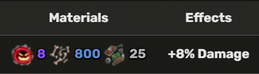

The Hallow Scythe can be obtained with a 5% chance by defeating the soul reaper.
Hallow Scythe Z Move
Hallow Scythe X Move
1. Go to the Haunted Castle.
2. Pray at the Gravestone NPC (random chance of getting Hallow Essence).
3. Use Bones to roll for Hallow Essence from the Death King.
4. Check your inventory for Hallow Essence.
5. Take it to the Blue Flame Altar to summon the Soul Reaper.
6. After summoning, defeat the Soul Reaper for a 5% chance to get Hallow Scythe.
The player needs to talk to the blacksmith to upgrade this sword: 